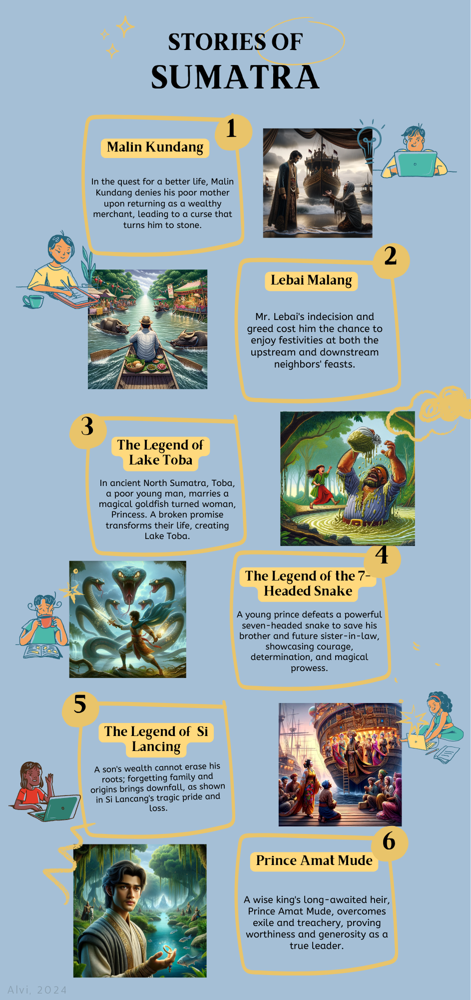
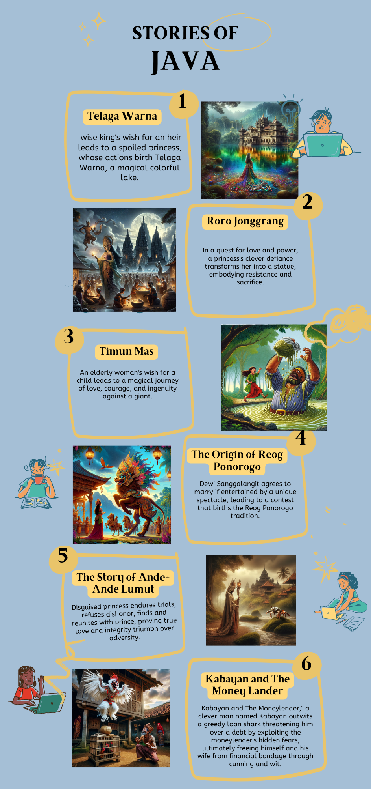

‌
<!DOCTYPE html>
<html lang="en">

<head>
    <meta charset="UTF-8">
    <meta name="viewport" content="width=device-width, initial-scale=1.0">
    <title>Fairy Tales in Indonesia</title>
    <style>
        body {
            font-family: Arial, sans-serif;
            margin: 0;
            padding: 0;
            background-color: #f4f4f4;
        }

        header {
            background-color: white;
            padding-left: 20px;
            text-align: center;
            color: white;
        }
        header img{
            width: 300px;
            height: 200px;
        }

        nav {
            background-color: #444;
            padding: 10px;
            text-align: center;
        }

        nav a {
            color: white;
            text-decoration: none;
            padding: 10px;
            margin: 10px 5px 5px;
            display: inline-block;
            font-size: 20px;
        }
        nav a:hover {
            color: white;
            text-decoration: underline;
            padding: 10px;
            margin: 10px 5px 5px;
            display: inline-block;
            font-size: 22px;
        }


        .popup {
            display: none;
            position:fixed;
            top: 50%;
            left: 0%;

            padding: 5px;
            background-color: #fff;
            box-shadow: 0 0 10px rgba(0, 0, 0, 0.3);
            z-index: 1000;
            max-height: 80vh;
            max-width: 80vw;
            overflow-y: auto;
            width: auto;
            height: auto;
        }

.popup img {
    max-width: 100%; /* Make the image responsive */
    height: auto; /* Maintain aspect ratio */
    display: block;
    margin: 0 auto 5px;
    border-radius: 5px;
}

.popup-content {
    max-width: 100%; /* Ensure the content doesn't exceed the width of the popup */
}


.popup button {
    background-color: darkred;
    color: white;
    border: none;
    padding: 10px 20px;
    cursor: pointer;
    font-size: 16px;
    width: 100%;
    border-radius: 5px;
}

.popup button:hover {
    background-color: #555;
}

        #sumatra{
            margin-top: 250px;
          margin-left: -50px;
            width: 270px;
            height: 350px;
            background-color: transparent;
        }
        area:hover{
            cursor: pointer;
        }
        .map { position: relative; width: 100%; max-width: 1700px; /* Set the maximum width of the map */ margin: 0 auto; /* Center the map horizontally */ } .map img { width: 100%; height: auto; } area { transition: all 0.3s ease; /* Add transition for smooth changes */ }


        footer {
            background-color: #333;
            color: white;
            padding: 20px;
            text-align: center;
            font-family: Arial, sans-serif;
        }

        .footer-container {
            display: flex;
            justify-content: space-around;
            flex-wrap: wrap;
        }

        .footer-left,
        .footer-center,
        .footer-right {
            flex: 1;
            margin: 10px;
        }

        .social-icons img {
            width: 30px;
            height: 30px;
            margin-right: 10px;
        }

        .copyright {
            margin-top: 20px;
        }
    </style>
</head>

<body style="background-color: #17818F;">
    <header>
        
    </header>

    <nav>
        <a href="story.html">Story</a>
        <a href="food.html">Food</a>
        <a href="index.html">Attraction</a>
        <a href="map.html">Map</a>
        <a href="contact.html">Contact</a>
    </nav>

    <div class="map">
    
    </div>

    <map name="workmap">
        <area id="sumatra" shape="poly" coords="33,156,114,180,337,339,455,412,410,514,358,520,8,180" alt="Sumatra" onclick="showPopup('sumatra')">
        <area shape="poly" coords="376,541,412,522,587,533,701,550,715,576,712,602,639,601,493,583,422,568" alt="Java" onclick="showPopup('java')">
        <area shape="poly" coords="723,592,742,582,1096,583,1104,632,1064,656,920,653,737,616" alt="Bali" onclick="showPopup('bali')">
        <area shape="poly" coords="542,278,664,290,733,261,758,210,817,212,839,233,869,317,824,367,772,450,720,461,569,437,526,369,514,313" alt="Borneo" onclick="showPopup('borneo')">
        <area shape="poly" coords="919,312,944,300,1104,293,1021,509,906,515,870,450,876,404" alt="Sulawesi" onclick="showPopup('sulawesi')">
        <area shape="poly" coords="1193,280,1221,300,1306,462,1139,462,1119,439" alt="Maluku" onclick="showPopup('maluku')">
        <area shape="poly" coords="1287,374,1363,350,1555,386,1669,419,1660,640,169,614,1307,579,1335,431" alt="Papua" onclick="showPopup('papua')">
      </map>


    <div id="popup-sumatra" class="popup">

       

        <map name="map-sumatra">
            <area shape="rect" coords="9,235, 915,483" alt="Sumatra1" href="https://folkloreforkids.blogspot.com/2020/07/the-legend-of-malin-kundang.html" target="_blank" rel="noopener noreferrer" onclick="showPopup('sumatra1')">
            <area shape="rect" coords="9,545, 915,769"  alt="Sumatra2"href="https://folkloreforkids.blogspot.com/2020/08/mr-lebai-malang.html" target="_blank" rel="noopener noreferrer" onclick="showPopup('Sumatra2')">
            <area shape="rect" coords="9,856,915,1071" alt="Sumatra3" href="https://folkloreforkids.blogspot.com/2020/07/the-legend-of-lake-toba.html" target="_blank" rel="noopener noreferrer" onclick="showPopup('Sumatra3')">
            <area shape="rect" coords="9,1153,915,1349" alt="Sumatra4" href="https://folkloreforkids.blogspot.com/2020/08/the-legend-of-seven-headed-snake.html" target="_blank" rel="noopener noreferrer" onclick="showPopup('Sumatra4')">
            <area shape="rect" coords="9,1429,915,1637" alt="Sumatra5" href="https://folkloreforkids.blogspot.com/2020/08/si-lancang.html" target="_blank" rel="noopener noreferrer" onclick="showPopup('Sumatra5')">
            <area shape="rect" coords="9,1714, 915,2000" alt="Sumatra6" href="https://folkloreforkids.blogspot.com/2021/07/prince-amat-mude-aceh-folklore.html" target="_blank" rel="noopener noreferrer" onclick="showPopup('Sumatra6')">
            </map>

            <button onclick="closePopup('sumatra')">Close</button>
    </div>


    <div id="popup-java" class="popup">
        

        <map name="map-java">
            <area shape="rect" coords="9,235, 915,483" alt="java1" href="https://folkloreforkids.blogspot.com/2015/10/telaga-warna-legend.html" target="_blank" rel="noopener noreferrer" onclick="showPopup('sumatra1')">
            <area shape="rect" coords="9,545, 915,769"  alt="java2"href="https://folkloreforkids.blogspot.com/2020/08/the-legend-of-roro-jonggrang.html" target="_blank" rel="noopener noreferrer" onclick="showPopup('Sumatra2')">
            <area shape="rect" coords="9,856,915,1071" alt="Java3" href="https://caritra.tumblr.com/post/133637080455/timun-mas-a-story-from-central-java-a-few" target="_blank" rel="noopener noreferrer" onclick="showPopup('Sumatra3')">
            <area shape="rect" coords="9,1153,915,1349" alt="Java4" href="https://folkloreforkids.blogspot.com/2020/07/the-origins-of-reog-ponorogo.html" target="_blank" rel="noopener noreferrer" onclick="showPopup('Sumatra4')">
            <area shape="rect" coords="9,1429,915,1637" alt="Java5" href="https://caritra.tumblr.com/post/134529758410/ande-ande-lumut-a-story-from-east-java-once-upon-a" target="_blank" rel="noopener noreferrer" onclick="showPopup('Sumatra5')">
            <area shape="rect" coords="9,1714, 915,2000" alt="Java6" href="https://folkloreforkids.blogspot.com/2020/07/kabayan-and-moneylender.html" onclick="showPopup('Sumatra6')">
            </map>
        <button onclick="closePopup('java')">Close</button>
    </div>


    <div id="popup-bali" class="popup">
        

        <map name="map-bali">
            <area shape="rect" coords="9,230, 931,498" alt="bali1" href="https://visitbali.id/property/manik-angkeran-the-history-of-the-bali-strait#:~:text=Manik%20Angkeran%20is%20Balinese%20folklore,was%20finally%20separated%20from%20Java." target="_blank" rel="noopener noreferrer" onclick="showPopup('sumatra1')">
            <area shape="rect" coords="9,603, 929,834"  alt="bali2"href="https://volunteerprogramsbali.org/bali-folk-stories-kebo-iwa-and-lake-batur/" target="_blank" rel="noopener noreferrer" onclick="showPopup('Sumatra2')">
            <area shape="rect" coords="9,951,929,1170" alt="bali3" href="https://folkloreforkids.blogspot.com/2021/07/garuda-wisnu-kencana-balinese-folklore.html" target="_blank" rel="noopener noreferrer" onclick="showPopup('Sumatra3')">
            <area shape="rect" coords="4,1344,929,1804" alt="bali4" href="https://indonesianfolktales.fandom.com/wiki/Calon_Arang_the_Witch" target="_blank" rel="noopener noreferrer" onclick="showPopup('Sumatra4')">
             </map>
        <button onclick="closePopup('bali')">Close</button>
    </div>

    <div id="popup-borneo" class="popup">
        

        <map name="map-borneo">
            <area shape="rect" coords="9,230, 931,498" alt="borneo1" href="https://thetuyang.com/2022/11/15/the-crying-stone/" target="_blank" rel="noopener noreferrer" onclick="showPopup('sumatra1')">
            <area shape="rect" coords="9,603, 929,834"  alt="borneo2"href="http://fromstory.blogspot.com/2015/12/fable-story-squirrels-and-fish-cork.html" target="_blank" rel="noopener noreferrer" onclick="showPopup('Sumatra2')">
            <area shape="rect" coords="9,951,929,1170" alt="borneo3" href="https://bahasainggrismudahsite.wordpress.com/2018/01/11/lipan-lake-narrative-text-full-story-full-illustration-full-moral-messages-and-full-questions-test/" target="_blank" rel="noopener noreferrer" onclick="showPopup('Sumatra3')">
            <area shape="rect" coords="4,1344,929,1804" alt="borneo4" href="https://folkloreforkids.blogspot.com/2020/08/the-curse-of-king-of-mintin-island.html" target="_blank" rel="noopener noreferrer" onclick="showPopup('Sumatra4')">
             </map>
        <button onclick="closePopup('borneo')">Close</button>
    </div>


    <div id="popup-sulawesi" class="popup">
        

        <map name="map-sulawesi">
            <area shape="rect" coords="9,230, 931,498" alt="sulawesi1" href="https://folkloreforkids.blogspot.com/2020/08/the-origin-of-mermaid-fish.html" target="_blank" rel="noopener noreferrer" onclick="showPopup('sumatra1')">
            <area shape="rect" coords="9,603, 929,834"  alt="sulawesi2"href="http://folktales4u.blogspot.com/2011/05/story-of-la-dana-and-his-buffalo.html" target="_blank" rel="noopener noreferrer" onclick="showPopup('Sumatra2')">
            <area shape="rect" coords="9,951,929,1170" alt="sulawesi3" href="https://folkloreforkids.blogspot.com/2020/08/the-story-of-monkey-and-chicken.html" target="_blank" rel="noopener noreferrer" onclick="showPopup('Sumatra3')">
            <area shape="rect" coords="4,1344,929,1804" alt="sulawesi4" href="https://folkloreforkids.blogspot.com/2020/08/la-moelu-orphan.html" target="_blank" rel="noopener noreferrer" onclick="showPopup('Sumatra4')">
             </map>
        <button onclick="closePopup('sulawesi')">Close</button>
    </div>
    <div id="popup-maluku" class="popup">
        

        <map name="map-maluku">
            <area shape="rect" coords="9,230, 931,498" alt="maluku1" href="http://indonesianfolklore.blogspot.com/2009/02/legend-of-blue-pond.html" target="_blank" rel="noopener noreferrer" onclick="showPopup('sumatra1')">
            <area shape="rect" coords="9,603, 929,834"  alt="maluku2"href="http://indonesianfolklore.blogspot.com/2007/10/deer-and-sea-snail-folklore-from-maluku.html" target="_blank" rel="noopener noreferrer" onclick="showPopup('Sumatra2')">
            <area shape="rect" coords="9,951,929,1170" alt="maluku3" href="http://galwo.blogspot.com/2009/05/batu-badaun.html" target="_blank" rel="noopener noreferrer" onclick="showPopup('Sumatra3')">
            <area shape="rect" coords="4,1344,929,1804" alt="maluku4" href="http://indonesianfolklore.blogspot.com/2014/09/bulu-pamali.html" target="_blank" rel="noopener noreferrer" onclick="showPopup('Sumatra4')">
             </map>
        <button onclick="closePopup('maluku')">Close</button>
    </div>

    <div id="popup-papua" class="popup">
        

        <map name="map-papua">
            <area shape="rect" coords="9,230, 931,498" alt="papua1" href="http://indonesianfolklore.blogspot.com/2008/02/biwar.html" target="_blank" rel="noopener noreferrer" onclick="showPopup('sumatra1')">
            <area shape="rect" coords="9,603, 929,834"  alt="papua2"href="https://www.scribd.com/document/397720755/Cerita-Rakyat-Asal-Nama-Irian" target="_blank" rel="noopener noreferrer" onclick="showPopup('Sumatra2')">
            <area shape="rect" coords="9,951,929,1170" alt="papua3" href="https://westpapuadiary.com/storytelling-time-here-are-4-brief-folklore-of-lake-sentani/" target="_blank" rel="noopener noreferrer" onclick="showPopup('Sumatra3')">
            <area shape="rect" coords="4,1344,929,1804" alt="papua4" href="https://folkloreforkids.blogspot.com/2020/08/the-legend-of-sacred-stone.html#:~:text=According%20to%20folklore%20from%20Papua,Rama%20Village%20and%20Aroempi%20Village." target="_blank" rel="noopener noreferrer" onclick="showPopup('Sumatra4')">
             </map>
        <button onclick="closePopup('papua')">Close</button>
    </div>
    <footer>
        <div class="footer-container">
            <div class="footer-left">
                <h3>About Us</h3>
                <p>We are a company dedicated to providing high-quality products and services.</p>
            </div>
            <div class="footer-center">
                <h3>Contact Us</h3>
                <p>Email: info@example.com</p>
                <p>Phone: +1234567890</p>
            </div>
            <div class="footer-right">
                <h3>Follow Us</h3>
                <div class="social-icons">
                    <a href="#"></a>
                    <a href="#"></a>
                    <a href="#"></a>
                </div>
            </div>
        </div>
        <div class="copyright">
            <p>&copy; 2024 Indo-Go2Joy. All rights reserved.</p>
        </div>
    </footer>
    <script>


function adjustMapCoordinates() {
    // The original width and height of the image
    const originalWidth = 1700; // Change this to your image's original width
    const originalHeight = 800; // Change this to your image's original height

    const image = document.querySelector('.map img'); // Select the responsive image
    if (!image) return;

    // Calculate the scale factors based on current width and height vs original width and height
    const widthScaleFactor = image.offsetWidth / originalWidth;
    const heightScaleFactor = image.offsetHeight / originalHeight;

    // Adjust coordinates for each area
    document.querySelectorAll('area').forEach(area => {
        const originalCoords = area.dataset.originalCoords || area.getAttribute('coords');
        if (!area.dataset.originalCoords) {
            area.dataset.originalCoords = originalCoords; // Store original coordinates if not already stored
        }

        const coordsArray = originalCoords.split(',').map((coord, index) => {
            // If index is even, it's an x-coordinate; otherwise, it's a y-coordinate
            return index % 2 === 0 ? Math.round(coord * widthScaleFactor) : Math.round(coord * heightScaleFactor);
        });
        area.setAttribute('coords', coordsArray.join(','));
    });
}

// Wait for the HTML document to be fully loaded before executing the code inside.
document.addEventListener('DOMContentLoaded', function() {
    // Adjust map coordinates initially when the page loads.
    adjustMapCoordinates();

    // Attach onload event handlers to all images within popups. This ensures that area coordinates are adjusted
    // once the images are fully loaded.
    document.querySelectorAll('.popup img').forEach(img => {
        img.onload = () => {
            let popup = img.closest('.popup'); // Find the closest popup ancestor of the image.
            adjustPopupAreaCoordinates(popup); // Adjust the area coordinates for the specific popup.
        };
    });

    // Debounce function to limit the rate at which a function is fired. This helps in performance optimization,
    // especially on events that fire very frequently like scroll and resize.
    function debounce(func, wait, immediate) {
        var timeout;
        return function() {
            var context = this, args = arguments;
            var later = function() {
                timeout = null;
                if (!immediate) func.apply(context, args); // Delay the function execution.
            };
            var callNow = immediate && !timeout;
            clearTimeout(timeout);
            timeout = setTimeout(later, wait); // Reset the timeout on every call and start counting down to execute the function.
            if (callNow) func.apply(context, args); // If the function should fire immediately and timeout is not set, fire it.
        };
    }

    // Set up scroll event listeners for each popup with a debounced function to optimize performance.
    document.querySelectorAll('.popup').forEach(popup => {
        const debouncedAdjust = debounce(() => adjustPopupAreaCoordinates(popup), 250);
        popup.addEventListener('scroll', debouncedAdjust);
    });
});

// Function to show a specific popup based on the area clicked.
function showPopup(area) {
    // Hide all popups initially.
    document.querySelectorAll('.popup').forEach(popup => {
        popup.style.display = 'none';
    });

    var popupId = 'popup-' + area;
    var popup = document.getElementById(popupId);
    if (popup) {
        popup.style.display = 'block'; // Display the relevant popup.
        adjustPopupPosition(popup); // Adjust the position of the popup to be visible properly.
        let img = popup.querySelector('img');
        if (img && img.complete) {
            adjustPopupAreaCoordinates(popup); // Adjust the area coordinates if the image is loaded.
        }
    }
}

// Function to close a specific popup.
function closePopup(area) {
    var popupId = 'popup-' + area;
    var popup = document.getElementById(popupId);
    if (popup) {
        popup.style.display = 'none'; // Hide the popup.
    }
}

// Event listeners for window load and resize to adjust map coordinates and popup positions accordingly.
window.addEventListener('load', adjustMapCoordinates); // Adjust map coordinates once everything is loaded.
window.addEventListener('resize', function() {
    adjustMapCoordinates(); // Adjust map coordinates when the window is resized.
    // Only adjust popups if they are visible.
    document.querySelectorAll('.popup').forEach(popup => {
        if (popup.style.display === 'block') {
            adjustPopupPosition(popup);
            adjustPopupAreaCoordinates(popup); // Adjust the popup area coordinates for better positioning.
        }
    });
});


function adjustPopupAreaCoordinates(specificPopup = null) {
    // Determine the collection of images to be processed. If a specific popup is provided,
    // select images within it; otherwise, select all images within elements with the class 'popup'.
    const targetImages = specificPopup ? specificPopup.querySelectorAll('img') : document.querySelectorAll('.popup img');

    // Iterate over each image in the collection.
    targetImages.forEach(image => {
        // If the image has not fully loaded, skip to the next image in the loop.
        // This is necessary to ensure that image dimensions are accurately obtained.
        if (!image.complete) return; // Skip processing this image if it has not fully loaded.

        // Get the natural (original) dimensions of the image.
        const originalWidth = image.naturalWidth;
        const originalHeight = image.naturalHeight;

        // Calculate scaling factors based on the difference between the displayed and original dimensions.
        const widthScaleFactor = image.offsetWidth / originalWidth;
        const heightScaleFactor = image.offsetHeight / originalHeight;

        // Find the image map associated with the image by extracting the map name from the useMap attribute
        // (which contains the hash symbol initially).
        const mapName = image.useMap.substring(1); // Remove the '#' from useMap value to get the ID.
        const areas = document.querySelectorAll(`map[name="${mapName}"] area`);

        // Process each area within the found image map.
        areas.forEach(area => {
            // Obtain the original coordinates from a custom data attribute or the area's coords attribute if not set previously.
            const originalCoords = area.dataset.originalCoords || area.getAttribute('coords');
            if (!area.dataset.originalCoords) {
                area.dataset.originalCoords = originalCoords; // Store the original coordinates to preserve them.
            }

            // Split the stored coordinates into an array and scale each coordinate.
            // Even indices (0, 2, ...) correspond to x coordinates, while odd indices (1, 3, ...) correspond to y coordinates.
            const coordsArray = originalCoords.split(',').map((coord, index) => {
                return index % 2 === 0 ? Math.round(coord * widthScaleFactor) : Math.round(coord * heightScaleFactor);
            });

            // Update the area's coordinates attribute with the newly calculated coordinates,
            // thereby adjusting it to match the scaled image dimensions.
            area.setAttribute('coords', coordsArray.join(','));
        });
    });
}


function adjustPopupPosition(popup) {
    const viewportWidth = window.innerWidth;
    const viewportHeight = window.innerHeight;
    const popupWidth = popup.offsetWidth;
    const popupHeight = popup.offsetHeight;

    const leftOffset = (viewportWidth - popupWidth) / 2;
    const topOffset = (viewportHeight - popupHeight) / 2;

    popup.style.left = leftOffset + 'px';
    popup.style.top = topOffset + 'px';
}


    </script>

</body>

</html>
